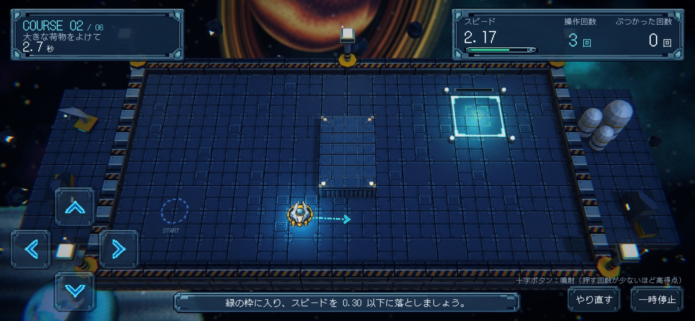
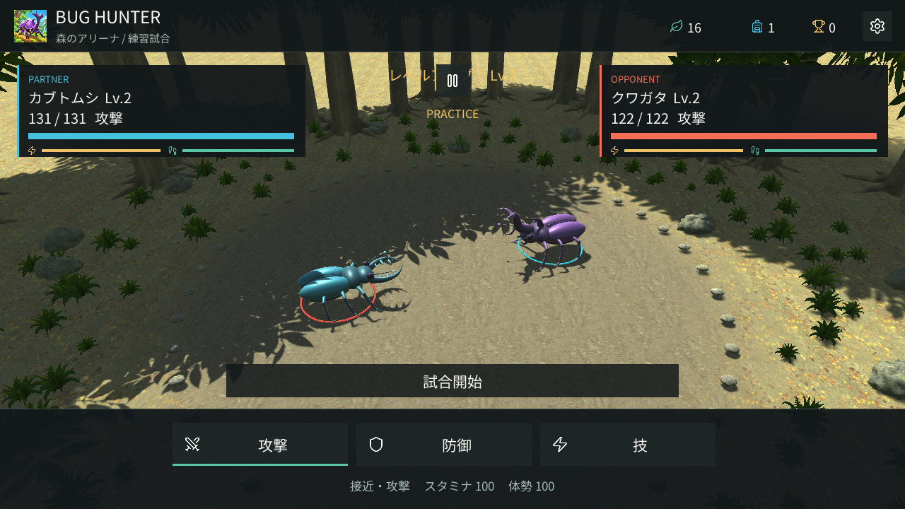
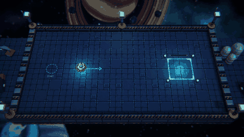
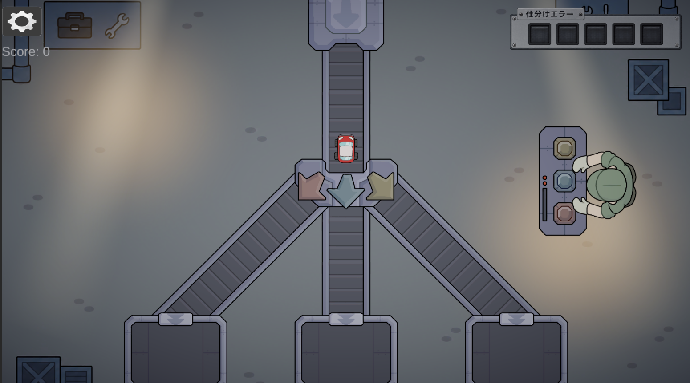

止めるタイミングが、遊びになる。
指を離しても進み続ける船を、反対方向の噴射で減速。進路に加えて「いつ止まり始めるか」を考え、枠内に収まったときの達成感を狙いました。
ゲームプランナー志望
遊びを考える。
企画・ルール設計・仕様整理から、チームでの制作まで。
仲間と協力し、完成まで取り組んでいます。
アプリのダウンロード・インストール不要Web版6作品 / PC推奨
慣性で滑る船を、逆噴射でぴたりと駐車。
身近な「駐車」と、宇宙ならではの「慣性」を組み合わせたアクションゲーム。4人で制作し、App Storeで公開した作品です。私は企画立案・整理・画像作成・SEを担当しました。

企画立案 / 整理 / 画像作成 / SE
制作人数：4人
指を離しても進み続ける船を、反対方向の噴射で減速。進路に加えて「いつ止まり始めるか」を考え、枠内に収まったときの達成感を狙いました。
公開版では時間・操作回数・衝突回数をコースごとに表示。S〜Cの評価と記録を見比べながら、操作の上達を実感できる仕組みになっています。
iPhone・iPad向けにApp Storeで公開。全6コースとGame Centerのランキングを備えています。ブラウザー版もunityroomでプレイできます。
「魅せる行動」を、勝つための戦略に。
Vtuberの配信文化を、3D対戦アクションへ。視聴者とのコミュニケーションをヒントに、アピールやコメントが駆け引きになるルールを企画しました。
企画 / 仕様整理 / システム設計 / タスク振り分け
素材集め / 3Dオブジェクト作成 / エフェクト / アニメーション
通常攻撃やガードに加え、アピールでボルテージを高めるシステムを設計。攻撃だけでなく、観客を盛り上げる行動も戦略になる体験を目指しました。
コメントや通知ウィンドウを戦闘ギミックとして活用。配信らしい要素を背景だけでなく、プレイヤーの判断に関わるルールへ組み込みました。
企画意図の整理とタスク振り分けに加え、3Dオブジェクト・エフェクト・アニメーションの制作にも参加しました。
はじめまして、島本善太です。
遊びの仕組みを考え、仲間と形にするゲームプランナーを目指しています。
札幌デザイン＆テクノロジー専門学校のスーパーゲームクリエーター専攻で学んでいます。ゲームプランナーを目指して独学でも学び、自分で企画を考えて、資料にまとめてきました。わからないことは調べながら、思いついた遊びを具体的なルールにする練習を重ねています。
仲間と一緒にゲームを制作し、作品を完成させてきました。何を作るかを整理し、企画だけでなく画像作成やSEなどにも取り組んでいます。最後まで作って、実際に遊べる形にすることを大切にしています。
App Storeで公開した「すべる宇宙駐車場」では、企画立案・整理・画像作成・SEを担当しました。仲間と制作したゲームを、実際に手に取って遊んでもらえる作品として届けています。
8人で制作した「V-Link Battle」では、企画・仕様整理・システム設計・タスク振り分けを担当しました。3Dオブジェクトやエフェクト、アニメーションの制作にも関わり、企画を資料にまとめるだけでなく、実際に形にする工程も経験しています。
これからは、自分の考えをもっとわかりやすく伝えられるようになりたいです。企画書や仕様書の書き方を学びながら、仲間と相談してゲームを完成させられるプランナーを目指しています。
プランナーの役割を一人で担い、独学で企画や資料作成を進めてきました。遊ぶ人の気持ちや作る側の進めやすさなど、いろいろな視点から考え、一つの案にこだわらず、状況に合わせて企画を見直すことを意識しています。
企画書だけでなく、ルールやゲームの動きを整理した仕様書も作成しました。自分の頭の中だけで終わらせず、制作メンバーに伝わるようにまとめることを意識しています。
仲間と一緒にゲームを制作し、作品を完成させてきました。企画の整理や画像作成・SEなど、自分にできることに取り組んでいます。
作品そのものだけでなく、どのような面白さを狙い、何を工夫したのかが分かるように整理しています。
アプリ不要 / Web版6作品
V-Link Battle / 線のこちら側・向こう側 / 反転暗殺 / てるてるウォーズ / 双子 / バグハンター
Web版は必要なゲームデータをブラウザー内で読み込みます。一部の演出はブラウザー向けに調整しています。
Windows用「アプリインストーラー」はWindows 10 / 11（64bit）専用です。ZIP版はダウンロードと展開が必要です。未署名のアプリのため、警告が表示される場合があります。
境界線で世界を分けるパズルアクションゲーム。
プレイヤーは自由に境界線を引くことができ、線を境に世界が分かれます。片側は重力あり、もう片側は無重力になります。境界線をうまく配置して、ゴールを目指すパズルアクションゲームです。
重力の違いを利用することで、プレイヤーの空間認識と発想力を試すパズル体験を目指した。
盤面反転を使ったステルスアクションゲーム。
敵に見つかる前にすべてを終わらせるステルスゲーム。プレイヤーは盤面を反転しながら進み、敵の視界を避けて安全なルートとタイミングで標的を仕留める。反転によって安全地帯と危険地帯が入れ替わるため、行動前の判断が重要になる。
状況が変化する中で最適な行動を考える、思考型ステルス体験を目指した。
モード切替と多様な効果で守り抜くタワーディフェンス。
てるてる坊主には「通常」と「逆さ」の2つのモードがあり、それぞれ異なる性能を発揮。スロー・毒・スタン・ノックバックなど10種類の特殊能力を駆使して、制限時間まで耐えるタワーディフェンスゲーム。
モード切替と複数の能力を組み合わせることで、戦略的に考えるタワーディフェンス体験を目指した。
兄弟を線で繋ぐリンクシステムが軸の戦略コマンドバトル。
兄と弟の2人を操作し、敵同士・味方同士・敵と味方を自由に線で繋ぐ「リンク」システムが軸のコマンドバトルゲーム。リンクには「ダメージを共有するリンク」「バフを共有するリンク」の2種類があり、リンクを引く順番と発動する順番によって戦況が大きく変わる。リンクゲージと設置可能回数を管理しながら、兄弟のコマンド行動と組み合わせて敵を全滅させ、階層を進んでいく。
マウス操作だけで完結する分かりやすい操作性を保ちながら、「誰と誰をどの順番で繋ぐか」という駆け引きに戦略の深さを持たせることを目指した。1ターンの行動順にリンクの発動タイミングを組み込むことで、通常のコマンドバトルにはない連鎖的な読み合いを生み出している。
個体差と体勢の駆け引きで勝負する、昆虫育成・対戦ゲーム。

捕まえた昆虫を育て、攻撃・防御・技を選んで戦うゲーム。移動や接近は昆虫が自動で行い、プレイヤーは相手の動きと自分の昆虫の状態を見ながら指示を出します。
外で虫取りができなくても、昆虫を捕まえて育てる楽しさを味わえるゲームを目指しました。能力値の高さだけで勝敗が決まらず、個体差と状況判断によって逆転が生まれる対戦を重視しています。
ブレーキのない宇宙船を、逆噴射でぴたりと駐車。

噴射をやめても滑り続ける宇宙船を操作し、障害物を避けながら駐車枠に止めるゲーム。進行方向と反対に噴射して減速し、船全体を枠内に収めます。全6コースで、通路の形や隕石に合わせた操作が求められます。iPhone・iPad版をApp Storeで公開しています。
テーマ「慣性」を、身近な「駐車」と組み合わせました。進むことよりも止まることに難しさを置き、少ない操作でぴたりと収まったときの達成感を狙っています。
流れてくる品物を見分けて、三色のレーンへ仕分け。

ベルトコンベアで流れてくる品物を見分け、分岐を切り替えて正しいレーンへ送るゲームです。不良品が混ざっていたら、仕分けずに上へ送り返します。ミスを5回するまでに、どこまでスコアを伸ばせるか挑戦します。
A・S・Dで左・下・右のレーンを選び、Wで不良品を返却します。品物の種類だけでなく状態にも目を向け、分岐点に到着するまでに判断することが大切です。
パズル、ステルス、戦略バトルなど、7つの企画。コンセプトからルール、プレイヤー体験までをまとめています。
境界線によって重力が変化する世界を利用し、プレイヤーの発想力と空間認識を試すパズルゲーム企画。
盤面反転によって安全地帯と危険地帯が変化する、思考型ステルスアクションゲーム企画。
モード切替と状態異常を組み合わせ、戦略的な配置と判断を重視したタワーディフェンス企画。
兄弟を線で繋ぐリンクシステムを軸に、ダメージ・バフの共有と発動順の駆け引きを楽しむ戦略コマンドバトル企画。
崩壊まで残り5分のダンジョンを探索し、限られた時間の中で強化を重ねながらボス討伐を目指す短時間ローグライクアクション企画。
「勝ちたいから学びたくなる」をテーマに企画した学習型カードゲーム。生物の特徴を利用したクイズバトルを通して、子どもたちが自然と生物への興味を深められる体験を目指しました。
「外で虫取りができなくても、虫取りの楽しさを体験できる」 をテーマに企画したFPS捕獲アクション。 昆虫採集のワクワク感と育成・対戦のやり込み要素を組み合わせ、 長く遊べる昆虫ゲームを目指しました。
公開している7作品のルールと確認項目を整理しました。変更前・変更理由・変更後も残し、途中から参加した人にも経緯が伝わる資料を目指しています。
慣性移動と駐車判定、得点の条件を整理。タッチ操作への対応と評価方法の変化を記録しています。
対戦操作とWeb版の表示条件を整理。キャラクターの枠表示や攻撃演出を見直した経緯を残しています。
個体差・育成・指示式バトルを整理。転倒による駆け引きと、操作や全画面表示の改善を記録しています。
2点を使う境界線と領域効果を整理。自由描画を想定した旧案との差と、引き継ぎ事項を記録しています。
移動・反転の回数と勝敗条件を整理。連続操作を想定した旧案と、現在のターン制を分けて説明します。
通常・反転モードと拠点の判定を整理。クリア条件の記載を補い、Web向け演出の変更を残しています。
リンクの作成・共有・消費と行動順を整理。リンクの種類を絞った経緯と、伝達上の課題をまとめています。
アイデアを出すだけでなく、どのように遊びへ落とし込むかを大切にしています。
ゲームプランナー志望として活かしていきたいスキルを、企画・制作・資料作成の観点で整理しています。
ゲームの遊びの核を考え、ルールや体験へ落とし込むためのスキルです。
3年間の学習と制作を通じて習得したツールと経験。
プランナー業務を支える基礎的なスキルや、制作で活かせる知識です。
制作作品・企画・担当内容についてのお問い合わせは、こちらへお願いいたします。
ここまでご覧いただきありがとうございます。作品や企画書、仕様書の詳細も必要に応じて提出できます。